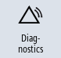

A list of all the alarms and messages that have occurred so far are listed in the "Alarm Log" window.
Up to 500 administered, incoming and outgoing events are displayed in chronological order.
 | Machine manufacturer Please refer to the machine manufacturer's specifications. |
Procedure
|  | 1. | Select the "Diagnostics" operating area. |
| | 2. | Press the "Alarm log" softkey. |
| | | The "Alarm Log" window opens. All of the coming and going events - that have occurred since the HMI was started - are listed. |
| | 3. | Press the "Display new" softkey to update the list of displayed alarms/messages. |
| | 4. | Press the "Save Log" softkey. The log that is currently displayed is stored as text file alarmlog.txt in the system data in directory /user/sinumerik/hmi/log/alarm_log. |